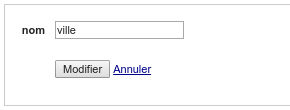
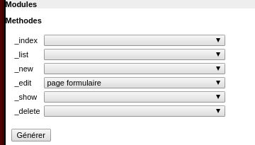

Générer une classe test pour les modules: page formulaire
Retour au menuMenu
- Formulaire simple- Formulaire avec des verifications
Choix: page formulaire simple
Ce template permet de verifier la soumission d'un formulairePrenons par exemple ici la méthode _edit, qui est une action proposant un formulaire de modification d'un enregistrement en base: ici d'une ville.

Issu d'une génération "normale" de CRUD, on a pour rappel le code suivant à tester
public function _edit(){
$tMessage=$this->processSave();
$oVille=model_ville::getInstance()->findById( _root::getParam('id') );
$oView=new _view('ville::edit');
$oView->oVille=$oVille;
$oView->tId=model_ville::getInstance()->getIdTab();
$oPluginXsrf=new plugin_xsrf();
$oView->token=$oPluginXsrf->getToken();
$oView->tMessage=$tMessage;
$this->oLayout->add('main',$oView);
}
private function processSave(){
if(!_root::getRequest()->isPost() ){ //si ce n'est pas une requete POST on ne soumet pas
return null;
}
$oPluginXsrf=new plugin_xsrf();//on verifie que le token est valide
if(!$oPluginXsrf->checkToken( _root::getParam('token') ) ){
return array('token'=>$oPluginXsrf->getMessage() );
}
$iId=_root::getParam('id',null);
if($iId==null){
$oVille=new row_ville;
}else{
$oVille=model_ville::getInstance()->findById( _root::getParam('id',null) );
}
$tColumn=array('nom');
foreach($tColumn as $sColumn){
$oVille->$sColumn=_root::getParam($sColumn,null) ;
}
if($oVille->save()){
//une fois enregistre on redirige (vers la page liste)
_root::redirect('ville::list');
}else{
return $oVille->getListError();
}
}
Ici l'idée: on propose un enregistrement donné, on simule un envoi de formulaire avec des valeurs données puis on verifie l'enregistrement "virtuel" en base
En générérant avec le builder:

Vous avez le code suivant:
public function test_edit()
{
//Arrange
//pour le mk: on assigne le mock a l'instance model (pour qu'il soit appele dans le code via le getInstance() )
/*
model_maTable::UTsetInstance('model_maTable', $this->getMock('model_maTable'));
//objet de base
$oMaTable=new row_maTable(array(
'id'=>45,
'nom'=> 'toto',
));
// on defini que la methode findById retournera cet objet
model_maTable::getInstance()->method('findById')->will($this->returnValue($oMaTable));
//Assert
//l'objet attendu: on part de l'objet de base
$oExpect=clone $oMaTable;
$oExpect->nom='titi'; //valeur attendu en base
//on indique que l'on veut verifier que l'objet qui sera envoye en base (en update) sera bien similaire
model_maTable::getInstance()->expects($this->once())->method('update')->with($oExpect);
*/
//Act
$tGet=array(
//id => ??
);
$tPost=array(
//champs du formulaire
);
$oForm=_unitTest::getForm();
$oForm->setGet($tGet);
$oForm->setPost($tPost);
$oForm->enableToken();
$oForm->send();
//on instancie le module
$oModuleVille=new module_ville;
//on appelle sa methode before (pour creer le layout)
$oModuleVille->before();
//enfin on appelle la methode concernee
$oModuleVille->_edit();
}
Le builder vous créé une methode de test avec un exemple de formulaire pour vous mettre le pied à l'étrier
Dans notre exemple cela donnera:
public function test_edit()
{
//--Arrange
//pour le mk: on assigne le mock a l'instance model (pour qu'il soit appele dans le code via le getInstance() )
model_ville::UTsetInstance('model_ville', $this->getMock('model_ville'));
//objet de base
$oExempleVille=new row_ville(array(
'id'=>45,
'nom'=> 'ville 45',
));
// on defini que la methode findById retournera cet objet
model_ville::getInstance()->method('findById')->will($this->returnValue($oExempleVille));
//--Assert
//l'objet attendu: on part de l'objet de base
$oExpect=clone $oExempleVille;
$oExpect->nom='ville 45 bis'; //valeur attendu en base
//on indique que l'on veut verifier que l'objet qui sera envoye en base sera bien similaire
model_ville::getInstance()->expects($this->once())->method('update')->with($oExpect);
//--Act
$tGet=array(
//id => ??
'id' => 34,
);
$tPost=array(
//champs du formulaire
'nom'=>'ville 45 bis',
);
$oForm=_unitTest::getForm();
$oForm->setGet($tGet);
$oForm->setPost($tPost);
$oForm->enableToken();
$oForm->send();
$oModuleVille=new module_ville;
$oModuleVille->before();
$oModuleVille->_edit();
}
Detaillons l'exemple:
Un test unitaire se décompose en 3 A: Assert (on défini un contexte), Assert (ce que l'on attend) Act ( l'action testé)
//Arrange (le contexte)
//--Arrange
//pour le mk: on assigne le mock a l'instance model (pour qu'il soit appele dans le code via le getInstance() )
model_ville::UTsetInstance('model_ville', $this->getMock('model_ville'));
//objet de base
$oExempleVille=new row_ville(array(
'id'=>45,
'nom'=> 'ville 45',
));
// on defini que la methode findById retournera cet objet
model_ville::getInstance()->method('findById')->will($this->returnValue($oExempleVille));
Donc ici dans l'exemple:
1. on force notre model ville avec un mock (le mock evitant d'interagir avec la base)
2. on créé un objet ville, rempli avec les valeurs que l'on souhaite
3. on indique que ce mock retournera cet objet ville à l'appel de "findById()"
//Assert (ce qui est attendu)
//Assert
//l'objet attendu: on part de l'objet de base oExamplVille en amont, puis on modifie son champ nom
$oExpect=clone $oExampleVille;
$oExpect->nom='ville 45 bis';
//on indique que l'on veut verifier que l'objet qui sera envoye en base sera bien similaire
$oModelVille->expects($this->once())->method('update')->with($oExpect);
On a donc une écriture "à l'envers": Arrange Assert Act
//Act (l'action a tester)
//--Act
$tGet=array(
//id => ??
'id' => 34,
);
$tPost=array(
//champs du formulaire
'nom'=>'ville 45 bis',
);
$oForm=_unitTest::getForm();
$oForm->setGet($tGet);
$oForm->setPost($tPost);
$oForm->enableToken();
$oForm->send();
$oModuleVille=new module_ville;
$oModuleVille->before();
$oModuleVille->_edit();
on simule la construction d'un formulaire: on indique le/les champs rempli,on active la gestion des jetons.
Enfin on instancie le module a tester, puis l'on appel la méthode before pour creer le layout.. puis l'action à tester: _edit()